以后会更正排版
紧接上次，已经创建好了数据库，接下来为了方便直观的管理数据库，我们借助Django的
admin工具，实际上本网站的对diango的admin工具的使用也仅限于这一点了。其实Django的admin工具还有更强大的功能
从上次数据库查询出的内容已经看到有一些跟网站用户相关的等等，但是我没有用到。
配置admin工具，使用admin工具得先初始化一个管理员用户，这个是diango自带用户管理的：
使用命令
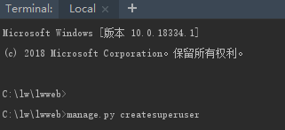
输入用户名密码就跟注册一样
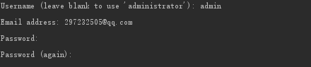
这里我输入6个6还不行，那就选N按照它的要求换个密码，我感觉这样比较稳妥：
换成了1q2w3e4e
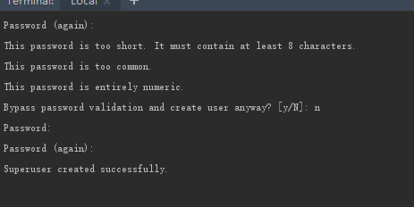
可见已经成功了
在URL配置里已经有配置好的路径：
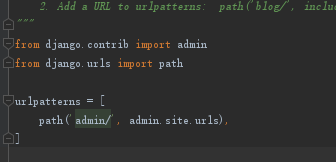
运行网站，在浏览器输入地址进入并登录：
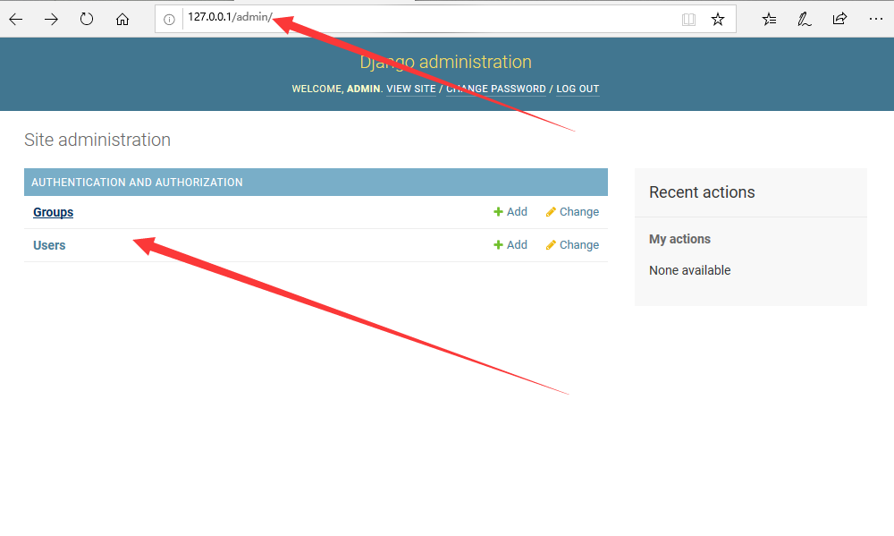
可以看到管理数据库的界面了，这个group跟user就是diango自己生成的数据库，咱们用不到，
为了咱们的数据库能在这个页面显示，需要进行设置：
在app的admin.py里这样引入models的类：
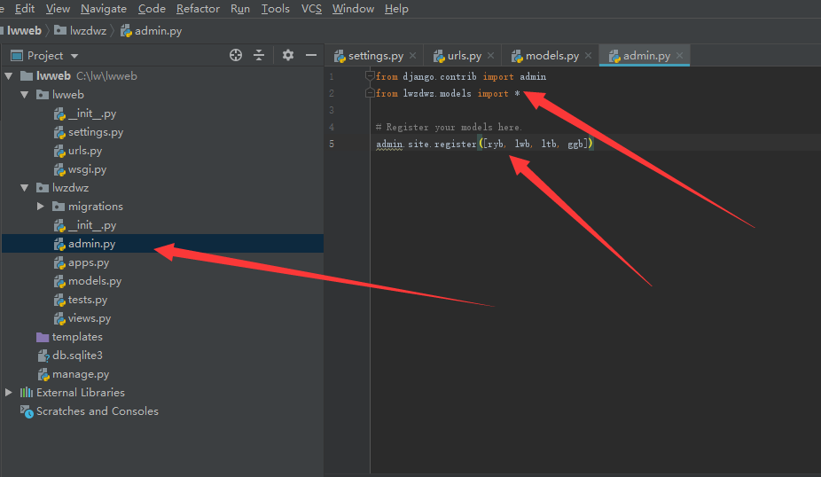
运行网站去admin界面查看可以看到已经有了，而且可以添加删除操作。
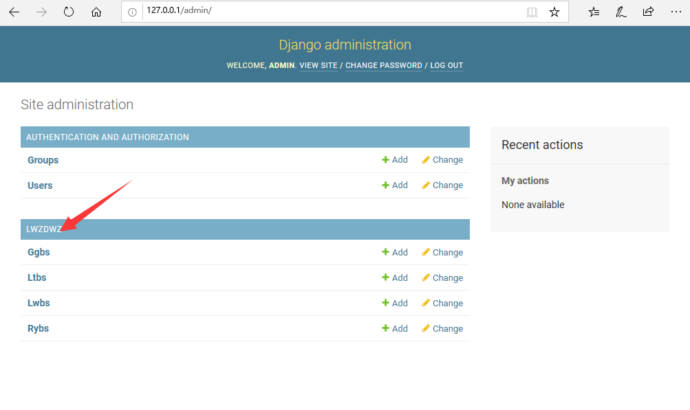
但是很别扭，需要对这个数据库管理界面进行进一步设置:
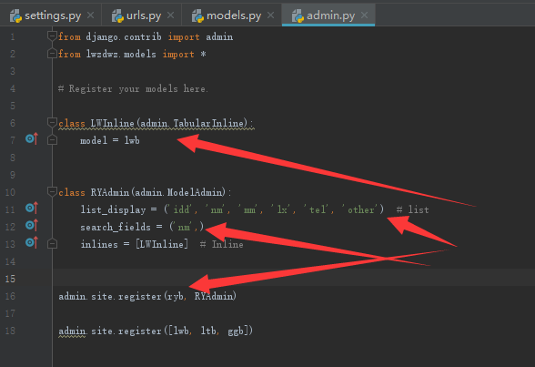
对人员表进行了设置，包括显示列，外键，还加了个搜索。随便加入一条数据大致如下：
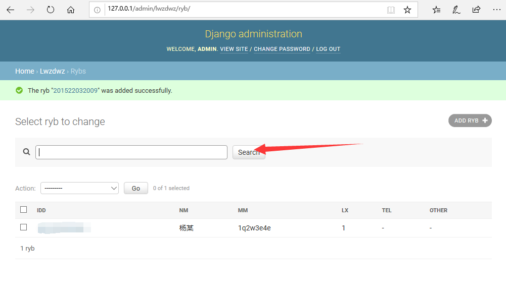
需要注意的是，在该网站的设计中是不希望我们通过以上方式添加删除数据的，以上的所有准备以及
操作都是是为了代替一个Mysql管理工具的作用。方便在后面的捣鼓中查看修改数据。
以上内容的主要参考：->https://www.runoob.com/django/django-admin-manage-tool.html
下面继续进行网站建设，首先我们要做网站的模板页，之前设计了两个模板页，这次决定只用一个模板页，
首先就是先把网站模板页基本内容做好，之后再在功能上继续边修改边写后台：
下面先把模板基本所需文件铺设好：
模板就是用html文件去做，故在默认的templates文件夹下新建文件
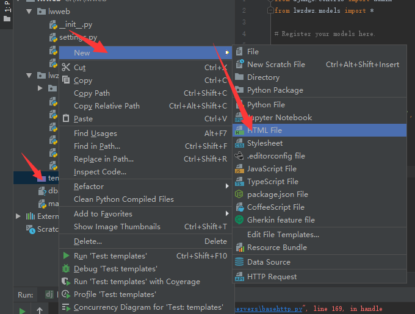
注意在setting.py里模板文件位置的设置，这里已经默认设置好了：
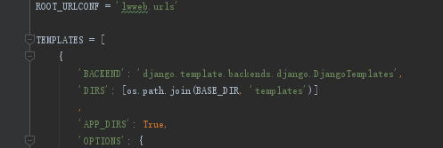
我们在模板里加入一语句来先来试试
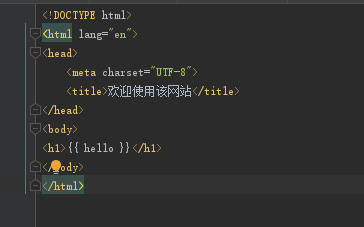
本来想自己新建一个处理文件，既然app里已经有一个view.py了就在里面写吧：
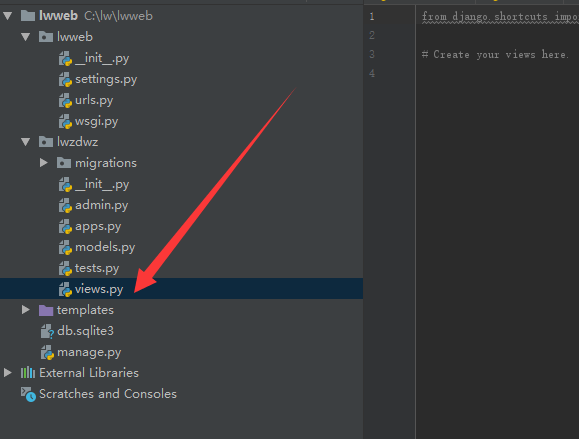
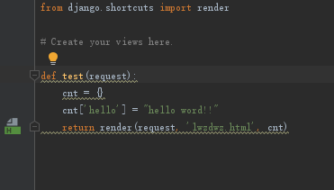
写好后设置一下url
这样写就是直接打开的主页了：
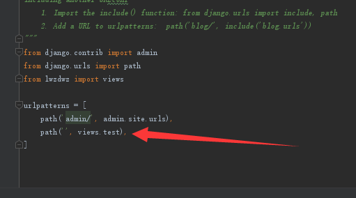
打开一下，发现没有问题：
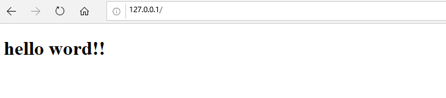
现在有一个问题就是给模板加CSS样式跟JS脚本，我们不希望它们跟模板的html写在一个文件里，
因为这样不专业。。。但是经过之前的网站设计发现如果给模板引用CSS跟JS脚本文件，在前端也就是用户
浏览器上是不会加载到的，例如像这样：
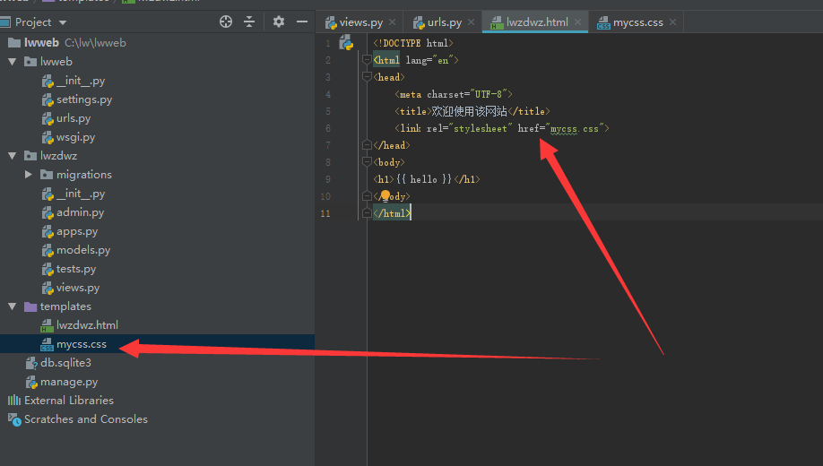
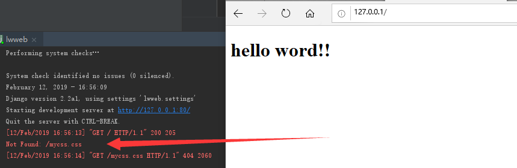
这主要是Django需要专门对静态文件进行设置：
在settings.py的最下面紧跟着STATIC_URL加上：
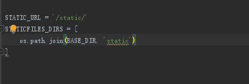
然后在根目录建个static的文件夹把CSS文件放进去即可，当然在哪建这个文件夹都无所谓，跟你上面配的路径对起来即可
(我打完这句话就立马把它放templates文件夹里了，因为我感觉这些静态文件无非给模板服务的，离得近点比较好，强迫症)
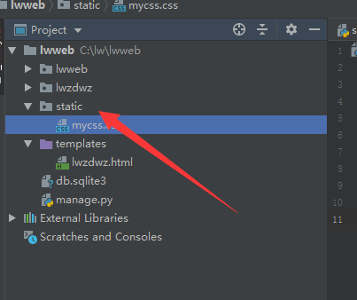
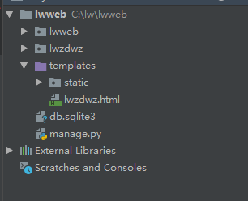
引用的时候直接static/+文件名即可(跟STATIC_URL里对应起来)，这里正巧跟正常引用一样。
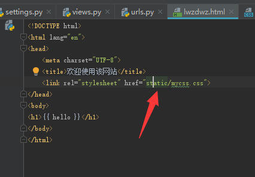
可以看到CSS生效了
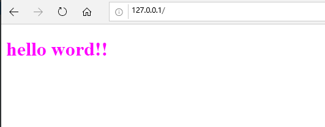
ok了，JS文件同理，这样就搞定前端文件的分离了
接下来就是正式写功能了
-----------------------------------------------------------------------------------skip2